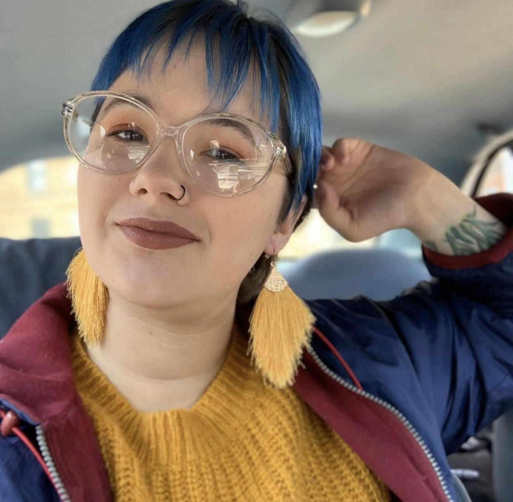

Hannah Ziegler
Bridging creative thinking and operational precision
About Me
I care about preserving information and making it accessible to the people who need it. My path has taken me from library technical services, where I helped rebuild an entire public library collection after a fire, to co-founding a Chicago catering business with donation-funded meal events for local families. Across every role, the common thread has been building systems that connect people with resources. I'm currently a Cycle 60 intern with I.C.Stars, where I'm growing my skills in data analysis, HTML, CSS, and SQL, and working on projects like my Kinect-based 3D modeling project that you can learn more about in The Science page. With a Bachelor's in English and Philosophy, I also bring a love of reading, research, and critical analysis to everything I do; and am passionate about engaging with media in all of it's formats. Some of my own writing can be found on The Arts page.
Back to top
Education & Training
Technology & Leadership Internship | Expected December 2026
i.c.stars | Chicago, IL
- Relevant Coursework: JavaScript, React, SQL, APIs, data modeling, Agile/Scrum
- Project Experience: Client-sponsored software project
Bachelor of Arts: English, Philosophy | May 2018
Spring Arbor University | Spring Arbor, MI
- Focus: Research methods, source evaluation, academic writing and written analysis
ServSafe Food Protection Manager Certification | November 2025 – November 2030
Back to topRelevant Skills & Accomplishments
Collection Recovery & Stewardship
- Led the team rebuilding a public library's 30,000+ item collection after a fire, coordinating assessment, replacement, cataloging and shelving in time for the grand reopening.
- Aligned 3–8 internal and external stakeholders, including library leadership, suppliers and the lead architect, around one recovery plan.
- Translated the inventory into shelving capacity, spatial and fixture requirements for the architect, shaping how the rebuilt facility would house and protect the collection.
- Kept circulation, patron accounts and reference services running throughout the recovery.
Cataloging, Classification & Digital Records
- Converted a corporate library of 3,000+ items from paper records to a searchable digital catalog as sole project owner, completing the reorganization in one summer.
- Researched, evaluated and implemented cataloging software, then migrated every item record into it.
- Standardized Dewey Decimal classification, call numbers and barcode labels across the collection for consistent management and retrieval.
- Processed and cataloged replacement materials for the public library collection, maintaining accurate catalog records.
Data Integrity & Records Management
- Audited and reconciled 50–200 carrier and customer invoices weekly across 20–75 accounts, cross-checking logistics systems to resolve discrepancies before payment.
- Reorganized a law firm's filing system of 100–500 confidential client files, making legal records faster to locate and retrieve.
- Verified 25–100 legal documents weekly for accuracy and consistency across filing copies; managed 10–30 weekly mail and shipping transactions for sensitive documents.
- Building skills in SQL, data modeling and APIs through i.c.stars, applying them to a client-sponsored software project.
Workflow Standards, Vendors & Training
- Managed 2–6 book suppliers during the library rebuild, writing section-by-section shelf-ready processing standards and correcting sample shipments until vendors met them consistently.
- Designed and delivered onboarding training for 3–10 new logistics hires each year, documenting procedures so coordinators followed the same process.
- Cross-trained on 3–5 operating stations in a high-volume service environment handling 750–2,000 orders per shift.
Research, Interpretation & Public Engagement
- Delivered historical interpretation of 19th-century community life to 300+ visitors daily at a living-history museum.
- Brings research, source evaluation and written analysis from a B.A. in English and Philosophy, plus published poetry (2017, 2018).
Project & Operations Leadership
- Co-founded and run a catering business producing 25–100 meals weekly and 2–8 catered events monthly for 10–30 recurring customers.
- Coordinate community meal initiatives distributing 50–250 donated meals annually.
- Plan procurement, inventory and delivery logistics end to end, applying ServSafe food safety standards to every order.
- Maintained safe, accessible public facilities across 19 county parks, prioritizing seasonal work across multiple sites.
Back to top
Work History
- Co-Owner & Head Chef, Mas Que Pupusas | June 2023–Present
- Crew Member, McDonald's Corporation | February 2024–June 2025
- Logistics Coordinator, Echo Global Logistics | September 2020–February 2023
- Technical Services Specialist, Eckhart Public Library | October 2018–January 2020
- Administrative Assistant, Fragomen Immigration Law Firm | June–September 2018
- Library Cataloging Contractor, Ambassador Enterprises | June–September 2017
- Historical Interpreter / General Store Attendant, Crossroads Village & Huckleberry Railroad | June–September 2016
Back to top
Contact
Email: hziegler@icstars.org
GitHub: github.com/hziegler-c60
Back to top